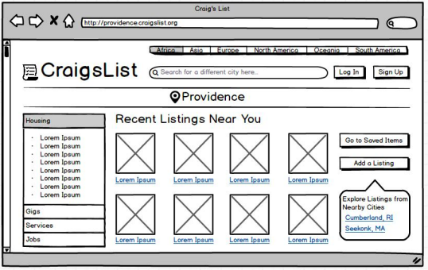
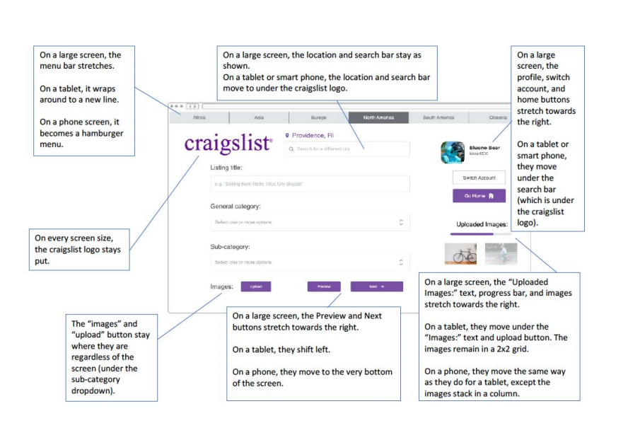
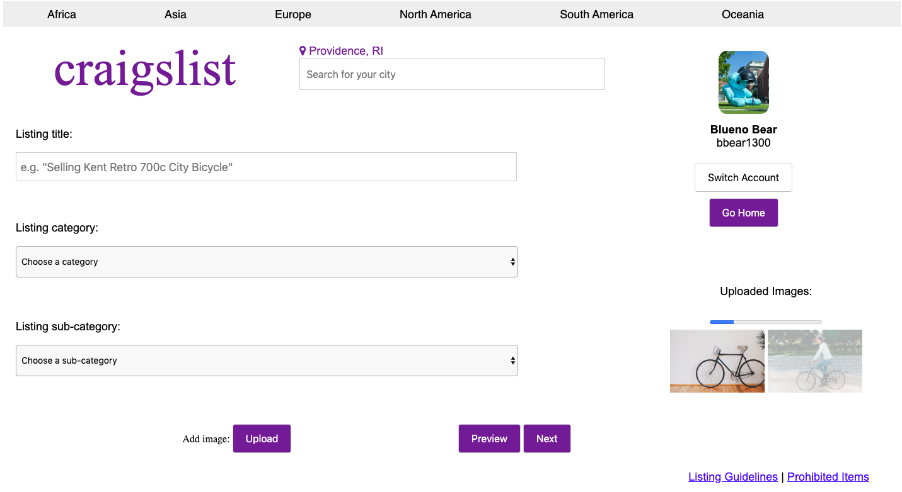
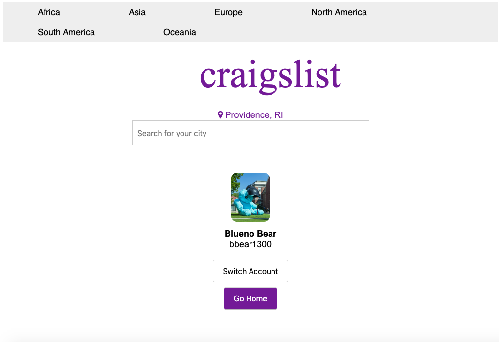
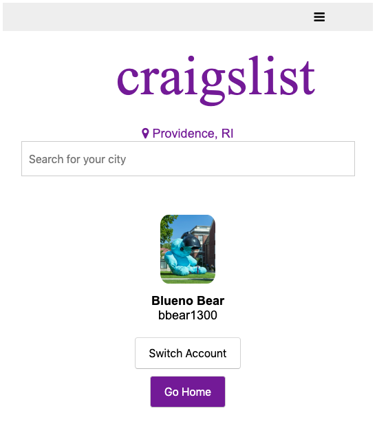

Redesigning Craigslist
View the pdf here
View the responsive page here
The Task
 A partner and I wanted to redesign the Craigslist website to be cleaner and easier to navigate, as well as responsive to different devices and screen sizes.
The Process
 We first created wire frames of a few of the website's pages. Once satisfied with the design, we drew out a diagram of how elements should be change in response to changing screen sizes. We went on to create a high-fidelity mockup of the site on Proto.io, and then I created the responsive version of the "add-listing" page using HTML and CSS.
Final Takeaways
This project was a great opportunity to learn about being conscious of and implementing responsive design. In the future, I would make the functionality more central to the design of the page, with the most likely tasks being the easiest to do (for example, the toolbar allowing users to change between different continents would likely not be used very frequently, while one navigating from home to listings would). Craigslist may also intentionally maintain a haphazard appearance because it allows its users so much freedom; it does not offer verification for the sellers and listings. I realized that the goal is not to make every interface look clean and polished, but rather to clearly communicate what the user can do.
  